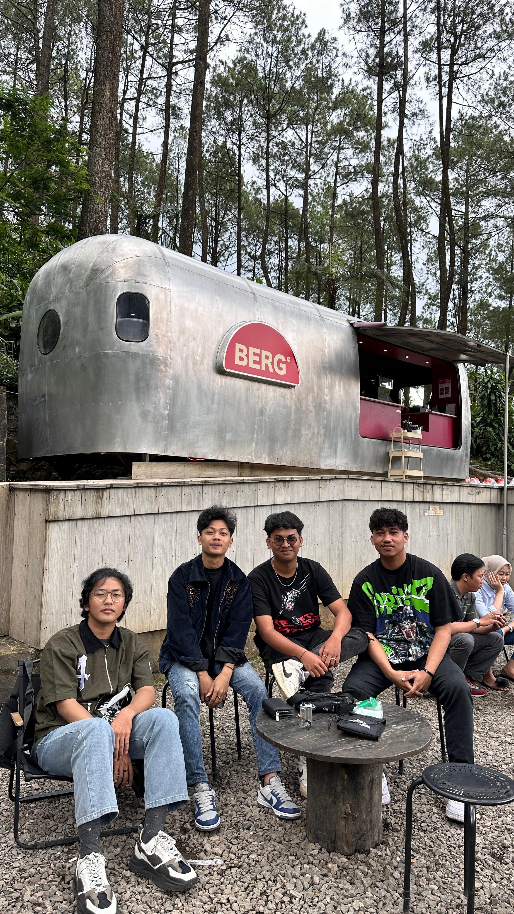

Minum kopi dengan pemandangan hutan yang hijau dan cuaca yang sejuk menjadi incaran bagi pecinta kuliner saat ini. Salah satu coffee shop yang sedang viral dan ramai dikunjungi adalah Berg Puntang yang lokasinya berada di wilayah NagaRa Puntang, Cimaung, Kabupaten Bandung. Pemandangan runtuhan Radio Malabar dan kolam cinta menjadi daya tarik tersendiri bagi pengunjung untuk membuat konten dan berwisata foto di daerah tersebut.
Untuk memasuki wilayah Berg Puntang, pengunjung akan dikenakan biaya Rp 10.000. Sementara itu untuk jam operasionalnya Berg Puntang buka setiap hari mulai pukul 08.00-17.00 WIB saat weekdays dan 08.00-20.00 WIB saat weekend.
